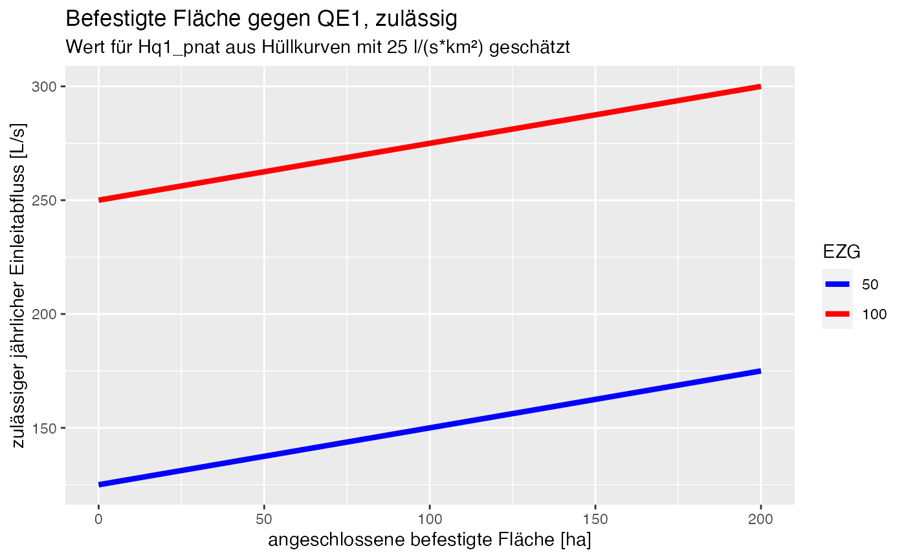

1. Zielstellung
Das folgende Dokument fasst den aktuellen Stand der Disukussion zur Bewertung von Regenwassereinleitungen im Projekt r2q zusammen. Für die Bewertung werden die Gewässer in verschiedene Typen eingeteilt und nach Größe klassifiziert.
- Fließgewäser: nach Einzugsgebietsgröße
- stehende Gewässer: nach Oberfläche
2. Bewertungsansatz und Belastungen
Im Projekt soll zwischen hydraulischer Belastung und stofflichen Belastungen unterschieden werden. Hydraulische Belastungen werden zunächst anhand der vereinfachten Berechnungsansatzes nach DWA-A 102-3/BWK-A 3-3 bewertet. Stoffliche Belastungen folgen im ersten Schritt ebensfalls dem genannten Merkblatt, werden jedoch durch weitere Schadstoffgruppen ergänzt/erweitert.
2.1 Nachweisraum und Nachweisorte
Als Bewertungsmaßstab zählt die Summe der Wirkung der Einleitungen aus einem geschlossenem Siedlungsgebiet und nicht die Wirkung der einzelnen Einleitung. Das geschlossene Siedlungsgebiet endet mit der letzten nicht mehr überlagerten Einleitung.
Als Einflussbereich wird der Gewässerabschnitt bezeichnet, der durch Regenwetterabflüsse wesentlich hydraulisch und/oder stofflich belastet wird. Eine genaue Abschätzung ist i.d.R.schwierig. Hilfestellung liefert Tabelle 8 in Kapitel 5.7.
Der Einflussberich endet ebenfalls wenn:
\[ \sum{ \frac{ A_{U} }{ A_{E0} }}<0.01 \]
wobei:
AU = undurchlässige Fläche
AE0 = oberirdisches Gewässereinzugsgebiet
Anmerkung Andi
Könnten wir evt anpassen, um zu begründen, dass wir unseren Ansatz für kleine Gewässer entwickelt haben. Hier könnten wir evt alternativ die Größeneinordnung der WRRL nehmen oder in Bezug setzen
2.2 Stofflicher Nachweis nach DWA-A 102-3 (vereinfacht)
Für jeden Nachweis Ort müssen Grnzwerte für Ammoniak, Sauerstoff und AFS(fein) eingehalten werden. Auf eine vereinfachte rechnerische NAchweisführung kann verzichtet werden, wenn die Kriterien des Relevanznachweises erfüllt sind (siehe Kapitel 6.4.4).
Grenzwerte:
- Sauerstoff: 5 mg/L (darf im Nachgang von Regenwassereinleitungen nicht unterschritten werden)
- Ammoniak: 0.1 mg/L (darf im Nachgang von Regenwassereinleitungen nicht überschritten werden)
- AFS63: Grenzfracht 9600 kg/(km² x a), für empfindliche Gewässer 6400 kg/(km² x a)
Die Belastung wird durch Einleitabflüsse und die Gewässervorbelastung bestimmt.
2.2.1 Einleitabflüsse
Annahmen Regenabflusskonzentrationen:
- CR,BSB5 = 20 mg/L
- CR,Nges = 5 mg/L
- CAFS63 = berechnet sich aus den Annahmen aus DWA A102-2 und berücksichtigt Flächenkategorien I-III
Anmerkung
Die von KWB vorschlagene Methodik erweitert das vorgeschlagene Spekturm an Zielparameter durch nach WRRL relvante Stoffe, beispielsweise Pestizide aus Bitumendächern, oder Schwermetalle wie Zink aus Metalldächern. Kommentar Andi: Wir sollten auch dieskutieren, ob wir O2 und NH3 weglassen, da die ja für MW-Überläufe stehen.
2.3 Hydraulischer Nachweis
Als Zielgröße für die Bewertung hydraulische Belastungen zählt der potenziell naturnahe Hochwasserabfluss HQn,pnat. Die Bedingung, unter der ein guter ökologische Zustand erreicht werden kann, wird über den Faktor x nachgewiesen.
\[ x = \frac{Hq_{2,pnat}}{Hq_{1,pnat}} -1 \]
2.3.1 Berechnung des zulässigen Einleitabflusses
Darauf basierend lässt sich der zulässige Einleitungsabfluss an einem Nachweisort wie folgt festlegen:
\[
Q_{E1, zul} = Hq_{1,pnat}\frac{A_{b,a}}{100} + x*Hq_{1,pnat}*A_{E0} \
\ \ \ in \ [L/s]
\]
mit:
Ab,a: angeschlossene befestigte Fläche in [ha]
AE0 : oberirdisches Einzugsgebiet bis zur Einleitstelle
[km²]
QE1,zul: zulässiger kritischer jährlicher Einleitabfluss
[L/s]
Der hydraulische Nachweis ist erbracht wenn die Summe der Einleitescheitel QE1 kleiner ist als QE1,zul.
Anmerkung: Der Faktor x kann aus nach Anhang B oder durch Simulationsrechnungen bestimmt werden. Liegt beides nicht vor, ist ein Wert von 0.1 anzusetzen. Dieser Wert zählt nur für flache Gebiete (kann z.B. im Mittelgebirge bis zu x = 0.4 betragen, und ist in den Alpen manchmal noch höher)
Der Faktor Hq1pnat kan aus den Hüllkurven im Anhang des Dokuments ermitelt werden.
Anmerkung Andi
Der erste Term entspricht dem natürlichen Gebietsabfluss aus Ab,a , der zweite Term ist die zuläßige Überschreitung.
Beispielrechnung
A_befestigt <- 0:200 #ha
A_EZG1 <- 50 # km²
A_EZG2 <- 100 # km²
#Gefaelle < 0.5
# Aus Hüllkurven im Anhang
Hq1_pnat <- 25 # l/(s*km²)
# Hq2, pnat ist unbekant desweegen wird x = 0.1 gesetzt
x <- 0.1
# Berechnung
QE1_zul <- Hq1_pnat*A_befestigt/100 + 0.1*Hq1_pnat*A_EZG1
QE1_zul2 <- Hq1_pnat*(A_befestigt/100 + 0.1*A_EZG2)
df <- data.frame(A_befestigt = A_befestigt,
EZG = as.factor(rep(c(A_EZG1, A_EZG2), each = 201)),
QE1_zul = c(QE1_zul, QE1_zul2))
library(ggplot2)
ggplot(df, aes( x = A_befestigt, y = QE1_zul, col = EZG)) + geom_line(lwd = 1.5)+
ggtitle("Befestigte Fläche gegen QE1, zulässig",
subtitle = "Wert für Hq1_pnat aus Hüllkurven mit 25 l/(s*km²) geschätzt") +
scale_color_manual(values = c("50"="blue", "100"="red"))+ xlab("angeschlossene befestigte Fläche [ha]") +
ylab("zulässiger jährlicher Einleitabfluss [L/s]")
2.3.2 Berechnung des maßgeblichen Einleitabflusses
Zur Berechnung des maßgeblichen Einleitabflusses wird auf Anhang A2 DWA 102-3 zurückgegriffen. Für Einleitungen aus dem Trenngebiet sind für die hydrologischen Nachweis die Summe der Regenwassereinleitungen maßgeblich. Diese bechnen sich durch:
\[ Q_{E1}=\sum{(A_{b,a}*f_{D}*r_{tf,1})} \]
mit
Ab,a: angeschlossene befestigte Fläche
fD: Abminderungswert “durchlässig befestigte Fläche”
rtf,1: Regenspende eines einjährlichen Regenereignisses
dessen Dauerstufe tf entspricht.
Die Dauerstufe tf wird aus der Fließzeit im Kanalnetz und der Fließzeit des resultierenden Gewässerabflusses im Einleitungsfall berechnet mit:
\[
t_{f} = t_{f_{k}} + t_{f_{G}}
\]
Die Fließzeit tfG wird aus dem resultierenden Durchfluss berechnet.
\[
Q_{G} = HQ_{1,pnat} + Q_{E1} \ \ \ in \ [L/s]
\]
und
\[
Q_{G} = v_{teil}*A_{teil} = \frac{s_{G}} {t_{f_{G}}}*A_{teil}
\]
\[ t_{f_{G}} = \frac{s_{G}*A_{teil}}{Q_{G}} \]
Frage
Ziel der Berechnung ist die Berechnung von QE1 für den hydraulischen Nachweis. Ich berechne tfG um zusammen mit tfK die Dauerstufe tf für rtf,1 zu berechnen. Letztere benötige ich um QE1 zu berechnen.> Gleichzeitig wird aber für die Berechnung von tfG die Nutzung von QG vorgeschlagen, was die Summe aus HQ1,pnat und QE1 (!!!) ist.
3. Diskussion KWB
Bewertet wird sowohl der IST-Zustand des Gewässers als auch die durch Regenwassereinleitungen zusätzlich eingetragene Belastung im Gewässer.
3.1 Jahresfracht
\[ C_{fiktiv} = \frac{(MQ*C_{gemessen}+Q_{Regen, EZG}*C_{Regen, EZG})}{MQ+Q_{Regen, EZG}} \]
CRegen,EZB: Annahme eines typischen Einzugsgebiets oder strukturspezifisch
3.2 Ereignisbelastung (akute Toxizität)
Für die Ereignisbelastung wird eine fiktive Ereigniskonzentraiton berechnet. Analog zum hydraulischen Nachweis nach DWA 102-3 wäre noch die Dauerstufe des 1-jährlichen Ereignises abzuklären.
\[
C_{fiktiv} = \frac{(HQ1_{gemessen?} * C_{gemessen}+Q_{Ereignis, Plan,
1a}*C_{Regen})}{HQ1_{gemessen?}+Q_{Ereignis, Plan, 1a}}
\]
wobei HQ1gemessen aus Hüllkurven für Hq1,nat und der Einzugsgebietsfläche AE0 abgeschätzt werden kann.
Frage Warum nehmen wir hier HQ1? Erscheint sinnvoll für kleinere Einzugsgebiete und Gewässer, bei denen lokaler Regen Q beeinflusst. Bei größeren Einzugsgebieten hat lokaler Regen eventuell kaum Einfluss auf Q?